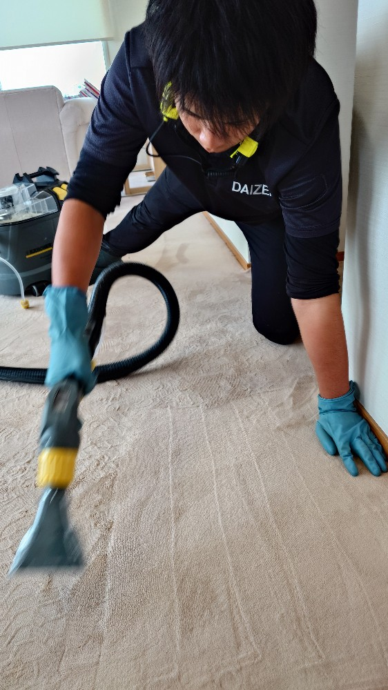
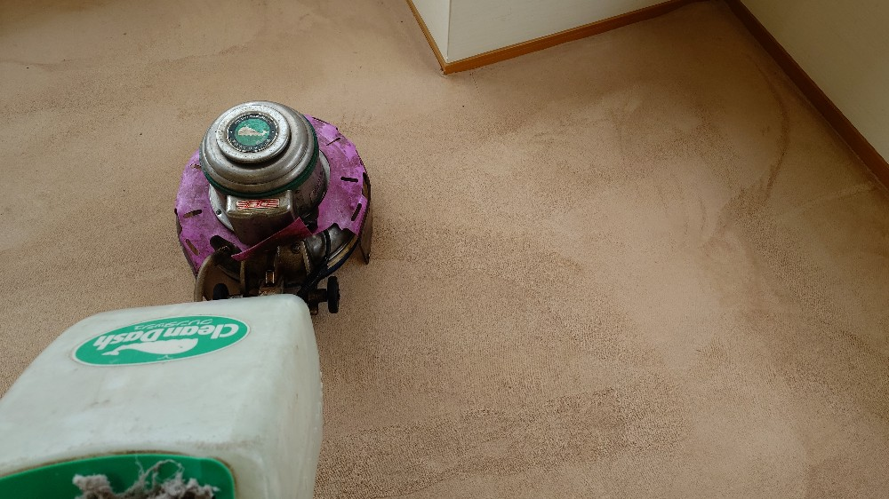
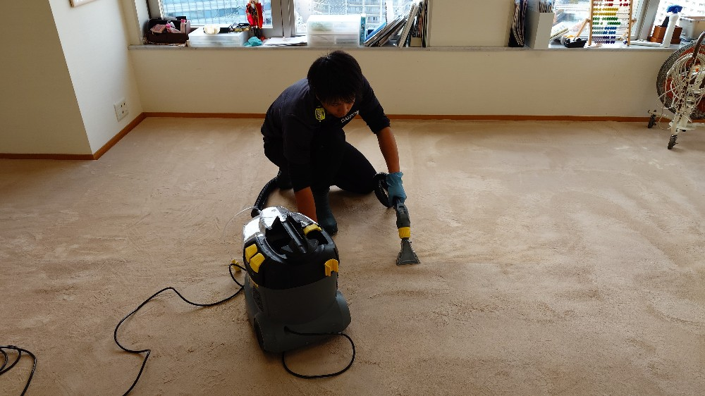
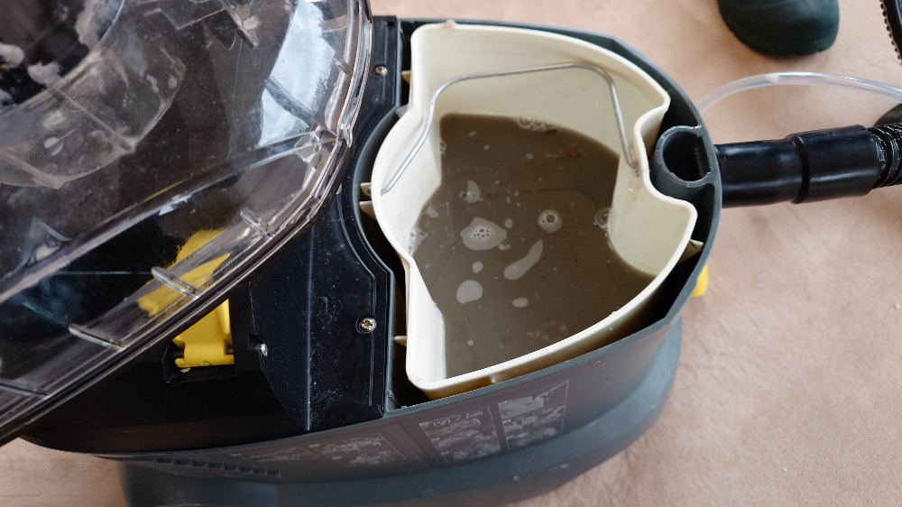

品川区東五反田のタワーマンション OK様のリビング、子供部屋、廊下のカーペットクリーニングをしました!

品川区東五反田のタワーマンションOK様のリビング、子供部屋、廊下のカーペットプロフェッショナルクリーニングを実施しました。OK様のカーペットはドイツ製で裏生地がしっかり設えてあり起毛もふわふわで密度も濃く良いカーペットです、ところどころくすみ汚れ、こぼし汚れが有り、少し色素沈着してしまった部分も有りますが、DAIZENプロフェッショナルクリーニングメソッドを駆使して可能な限り復元のクリーニングをしました。カーペットと同じくこちらもドイツ製専用薬剤、同じくドイツ製カーペットリンサー機器を用いて堆積汚れを強力に吸引して可能な限り除去しました。みるみる汚水が採取されて、乾燥仕上げすると元来のふわふわ感、良いカーペットのしなやかさが現れました。OK様に喜んで頂けました!


